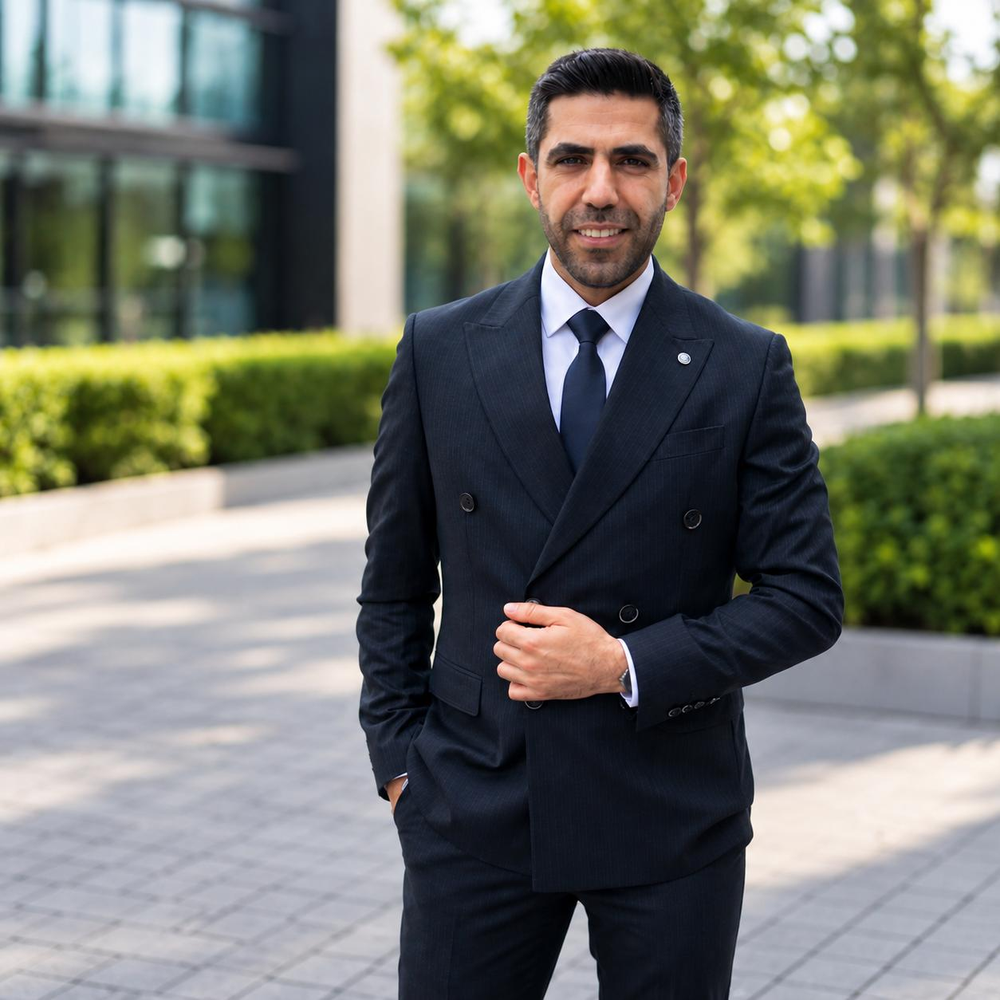

IT Manager
Experienced in IT infrastructure, system administration, networking, Microsoft 365, Active Directory and technical support. Passionate about building secure, reliable and efficient technology environments.

ABOUT ME
I am an Information Technology Specialist with experience in IT infrastructure, system administration, networking, Microsoft 365 and Active Directory.
I enjoy solving technical problems, improving IT operations and supporting users with reliable and secure technology solutions.
My goal is to continuously improve my skills in cloud computing, cybersecurity and enterprise IT systems.
IT Infrastructure & Technical Support
Microsoft 365, Active Directory, Networking, Windows Server
Reliable IT Systems, Security and User Support
MY SKILLS
Cloud Services & Infrastructure
Server Administration
User & Permission Management
Exchange • Teams • Outlook
TCP/IP • DNS • DHCP • VPN
Firewall • Security Operations
Automation & Administration
Virtual Machines Management
PC, Laptop & Peripheral Setup
End User Technical Support
Identity & Access Management
Enterprise IT Infrastructure
MY EXPERIENCE
Provided technical support and assisted with the management of IT infrastructure, hardware, software, and network systems to ensure reliable and efficient daily operations.
Provided technical support and assisted with the management of IT infrastructure, hardware, software, and network systems to ensure reliable and efficient daily operations.
Provided technical support and assisted with the management of IT infrastructure, hardware, software, and network systems to ensure reliable and efficient daily operations.
Responsible for supporting and maintaining management systems, ensuring compliance with company procedures and standards, and contributing to continuous improvement processes.
Managing IT infrastructure, providing technical support and maintaining reliable IT operations across the organization.
Responsible for the maintenance, troubleshooting, and repair of technical equipment and systems, ensuring reliable and safe operation while minimizing equipment downtime.
Supported users with hardware, software and basic network-related technical issues.
REFERENCES
Professional reference from previous employment.
Professional reference from previous employment.
Professional reference from previous employment.
GET IN TOUCH
Feel free to get in touch with me. I am always open to discussing new opportunities, professional connections and IT-related topics.
Türkiye